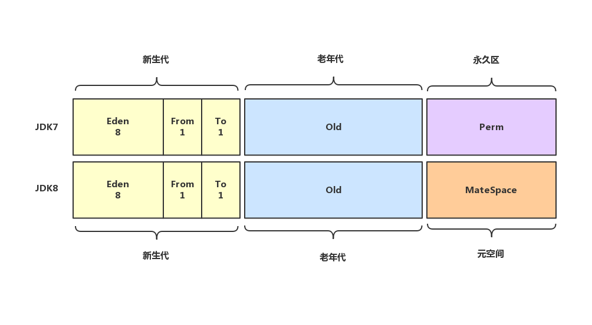

JVM系列博文，是拜读周志明老师的《深入理解Java虚拟机——JVM高级特性与最佳实践》并结合Oracle官网《Java Virtual Machine Specification》和一些网络博客后，以及自己的理解，作为读书笔记性质记录。
引言
JVM（Java Virtual Machine）是Java平台的基础，它基于硬件和操作系统之上，能运行Java字节码的虚拟机。JVM拥有完善的架构体系，如寄存器、堆栈和计数器，还有自己的指令系统，它屏蔽了不同操作系统之间的差异性，使Java程序能够跨平台运行，实现Write Once,Run Anywhere。比较流行的JVM实现为sun公司开发的Hotspot（现已经被Oracle收购）、Oracle的JRockit和IBM的J9。本文和后续文章都基于JDK1.8的Hotspot虚拟机。
这是查看JDK版本，或者验证Java环境变量是否生效的常用命令，一直以来，我只关心版本号，也只停留在第一行输出的内容上。随着对java的深入，我开始关注第三行输出的内容：JVM类型和模式。
Java HotSpot 是虚拟机的名称
Client 是虚拟机的类型，与之对应的是Server类型
build 25.65-b01 是版本号
mixed mode 是虚拟机的工作模式
JVM类型
Client和Server
为什么虚拟机有Client和Server之分？先来看看官方说明
What’s the difference between the -client and -server systems?
These two systems are different binaries. They are essentially two different compilers (JITs)interfacing to the same runtime system. The client system is optimal for applications which need fast startup times or small footprints, the server system is optimal for applications where the overall performance is most important. In general the client system is better suited for interactive applications such as GUIs. Some of the other differences include the compilation policy,heap defaults, and inlining policy.
Server JVM和Client JVM分别使用不同的编译器，Client（也叫C1编译器）适用于需要快速启动且内存占用较小的应用，比如GUI等交互式应用，而Server（也叫C2编译器）启动慢，启动后性能更强，适合整体执行效率高的应用比如后台程序，除此之外，编译策略、默认堆大小和内部的策略也存在差异。根据《Java Platform, Standard Edition HotSpot Virtual Machine Garbage Collection Tuning Guide》，看看默认时和最大时堆的大小在两者间的区别
Default Heap Size
Unless the initial and maximum heap sizes are specified on the command line, they are calculated based on the amount of memory on the machine.
Client JVM Default Initial and Maximum Heap Sizes
The default maximum heap size is half of the physical memory up to a physical memory size of 192 megabytes (MB) and otherwise one fourth of the physical memory up to a physical memory size of 1 gigabyte (GB).
For example, if your computer has 128 MB of physical memory, then the maximum heap size is 64 MB, and greater than or equal to 1 GB of physical memory results in a maximum heap size of 256 MB.
The maximum heap size is not actually used by the JVM unless your program creates enough objects to require it. A much smaller amount, called the initial heap size, is allocated during JVM initialization. This amount is at least 8 MB and otherwise 1/64th of physical memory up to a physical memory size of 1 GB.
The maximum amount of space allocated to the young generation is one third of the total heap size.
Server JVM Default Initial and Maximum Heap Sizes
The default initial and maximum heap sizes work similarly on the server JVM as it does on the client JVM, except that the default values can go higher. On 32-bit JVMs, the default maximum heap size can be up to 1 GB if there is 4 GB or more of physical memory. On 64-bit JVMs, the default maximum heap size can be up to 32 GB if there is 128 GB or more of physical memory. You can always set a higher or lower initial and maximum heap by specifying those values directly; see the next section.
Client JVM在物理内存不超过192MB时，默认堆内存大小为物理内存的一半（物理内存=128MB时，堆内存大小为64MB），当物理内存大于1GB时，堆内存大小最大不超过256MB。当然，JVM初始化时并不会根据物理内存直接分配最大堆内存，而是先分配一个初始化值，至少8M或者物理内存的1/64（物理内存超过1GB时），此外，新生代的最大内存占堆大小的1/3.
Server JVM的堆内存默认大小比Client更高，在32位JVM上，如果物理内存>=4GB，则默认的最大堆内存可达1GB。在64位JVM上，如果物理内存达到128G，默认堆内存大小最大为32GB，这些默认值和最大值都可以通过启动参数来指定。
除了默认堆内存大小的区别外，Server JVM会对编译后的代码进行优化。
1 | public class Test { |
循环1亿次，分别在Server和Client模式下执行（32位JDK）。
执行结果来看，Server的执行耗时明显少于Client，相差几倍。以上代码和命令是运行在32位JVM上，如果在64位JVM上运行呢？
Server和Client的执行耗时并没有明显的差别，究其原因，java命令在64位虚拟机上已经忽略了-client参数且不提供Client类型的jvm，也就是说无法通过该命令以client jvm运行字节码（官方文档）
Standard Options
-client
Selects the Java HotSpot Client VM. A 64-bit capable JDK currently ignores this option and instead uses the Java Hotspot Server VM.
For default Java VM selection, see the Server-Class Machine Detection page at
http://docs.oracle.com/javase/7/docs/technotes/guides/vm/server-class.html-server
Selects the Java HotSpot Server VM. On a 64-bit capable JDK, only the Java Hotspot Server VM is supported so the
-`server` option is implicit.For default a Java VM selection, see the Server-Class Machine Detection page at
http://docs.oracle.com/javase/7/docs/technotes/guides/vm/server-class.html
类型切换
JVM是如何决定以哪种类型启动的呢？以下内容来自官方文档：Server-Class Machine Detection
Server-Class Machine Detection
Starting with J2SE 5.0, when an application starts up, the launcher can attempt to detect whether the application is running on a “server-class” machine and, if so, use the Java HotSpot Server Virtual Machine (server VM) instead of the Java HotSpot Client Virtual Machine (client VM). The aim is to improve performance even if no one configures the VM to reflect the application it’s running. In general, the server VM starts up more slowly than the client VM, but over time runs more quickly.
Note:For Java SE 6, the definition of a server-class machine is one with at least 2 CPUs and at least 2GB of physical memory.
In Java SE 6, server-class detection occurs if neither
-servernor-clientis specified when launching the application on an i586 or Sparc 32-bit machine running Solaris or Linux. As the following table shows, the i586 Microsoft Windows platform uses the client VM by default. The remaining Sun-supported platforms use only the server VM.
（各平台的默认JVM类型，—表示不提供该类型的jvm）
从Jave SE 5开始，当一个应用启动的时候，加载器会尝试去检测应用是否运行在 “server-class” 的机器上，如果是，则使用Java HotSpot Server Virtual Machine (server VM)而不是 Java HotSpot Client Virtual Machine (client VM)。这样做的目的是提高执行效率，即使没有为应用显式配置VM。特别强调：从Java SE 6开始， server-class机器的定义是至少有2个CPU和至少2GB的物理内存。
有两种方式可以切换jvm类型，第一种是上面提到过的命令（command-line options），第二种就要修改jvm.cfg配置文件。
32位JDK的配置文件目录：%JAVA_HOME%\jre\lib\i386\jvm.cfg
1 | # List of JVMs that can be used as an option to java, javac, etc. |
64位JDK下的配置文件目录：%JAVA_HOME%\jre\lib\amd64\jvm.cfg
1 | # List of JVMs that can be used as an option to java, javac, etc. |
32位JDK只要调整配置顺序即可切换，64位JDK默认不提供client模式，即使切换了，也会提示错误
JVM工作模式
命令行输入
1 | java -X |
看到以下结果
这是其中两种JVM的工作模式，除此之外还有-Xcomp模式，先看官方如何解释这三种模式
-Xcomp
Forces compilation of methods on first invocation. By default, the Client VM (
-client) performs 1,000 interpreted method invocations and the Server VM (-server) performs 10,000 interpreted method invocations to gather information for efficient compilation. Specifying the-Xcompoption disables interpreted method invocations to increase compilation performance at the expense of efficiency.You can also change the number of interpreted method invocations before compilation using the
-XX:CompileThresholdoption.-Xint
Runs the application in interpreted-only mode. Compilation to native code is disabled, and all bytecode is executed by the interpreter. The performance benefits offered by the just in time (JIT) compiler are not present in this mode.
-Xmixed
Executes all bytecode by the interpreter except for hot methods, which are compiled to native code.
-Xint：解释模式（interpreted mode），强制JVM以解释方式执行字节码，禁用编译器。
-Xcomp：编译模式（compiled mode），强制JVM在第一次使用时将所有字节码编译成本地代码，性能高于解释模式。
-Xmixed：混合模式（mixed mode），它同时使用编译模式和解释模式，JVM会对字节码进行分析，将频繁调用的部分编译成本地代码，以提高执行效率；很少调用甚至几乎没有调用的方法以解释模式执行，减少编译和优化的成本。
早期的JVM是通过解释器执行代码，当它发现某些方法或者代码块运行频繁时，就会把这些代码标记为“热点代码（Hot Spot Code）”（HotSpot名称也是由此而来）。后来为了提高热点代码的执行效率，在运行时，虚拟机会把这些代码编译成本地平台相关的机器码进行优化，负责这个编译工作的编译器为即时编译器，即JIT（Just In Time Complier）编译器。
还是以1亿次循环为例，比较三种模式的运行效率。
-Xint效率最差，-Xcomp和-Xmixed几乎没有差别。
运行时数据区
JVM在执行Java程序的过程中把它所管理的内存划分为若干个不同的数据区域，如上图。
程序计数器（Program Counter Register）
程序计数器时一块较小的内存空间，可以看作是当前线程所执行字节码的行号指示器。在JVM概念模型里，字节码指示器工作时就是通过改变这个计数器值来选取一条需要执行的字节码指令，分支、循环、跳转、异常处理、线程恢复等基础功能都要依赖计数器完成。
JVM的多线程是通过线程切换并分配处理器时间的方式来实现，任何时刻一个处理器都只会执行一条线程中的指令。因此，为了线程恢复后能恢复到正确的执行位置，每条线程都需要有独立的计数器，线程间互不影响，独立存储，这类内存称为“线程私有”的内存。
线程执行的是Java方法，计数器记录的是JVM的字节码指令地址；如果执行的是Native方法，计数器值为空。此内存区域是唯一一个在JVM规范中没有定义OutOfMemoryError情况的区域。
虚拟机栈（Java Virtual Machine Stacks）
虚拟机栈也是线程私有的，其生命周期与线程相同，线程结束内存释放，因此虚拟机栈并不存在垃圾回收的问题。虚拟机栈描述的是Java方法执行的内存模型：每个方法执行时都会创建一个栈帧（Stack Frame）用于存储局部变量表、操作数栈、动态链接、方法出口等信息，方法的调用其实就是出栈和入栈的过程。
虚拟机栈存储哪些数据？原文描述
局部变量（Local Variables）
编译时能确定的数据；
8种基本数据类型、对象的引用、实例方法和方法返回地址（returnAddress）；
方法入参、出参和临时变量；
栈操作（Operand Stacks）
记录入栈、出栈操作；
以下代码为例描述出入栈过程。
1 | public static void main(String[] args) { |

虚拟机栈可能出现的两种异常：
- 如果线程请求的栈深度大于允许的深度，会抛出StackOverflowError；
- 如果虚拟机栈扩展时内存不足，就会抛出OutOfMemoryError。
本地方法栈（Native Method Stack）
与虚拟机栈相似，只不过虚拟机栈执行的是Java方法，本地方法栈执行的是native方法，也可能抛出StackOverflowError、OutOfMemoryError。由于HotSpot虚拟机中并不区分虚拟机栈和本地方法栈，因此-Xoss参数（设置本地方法栈大小）虽然存在，但实际是无效的，栈容量只能由-Xss参数设置，以下是栈溢出的示例代码。
1 | /** |
运行结果：
1 | stack length:2103 |
以上结果说明栈深度超过JVM允许的最大深度，抛出StackOverflowError，那么要如何抛出OutOfMemoryError？可以通过不断创建新线程，把内存耗尽，但是这种方式产生的内存溢出与栈空间是否足够大并没有任何关系。
堆（Heap）
堆是所有线程共享的区域，它在启动时创建，此区域的唯一目的就是存放对象的实例，几乎所有的对象实例都在这个区域分配内存。为什么说“几乎”？因为随着JIT编译器的发展和逃逸技术分析成熟，栈上分配、标量替换优化技术会产生一些微妙的变化，所有对象都分配在堆上也就不完全绝对了。一个JVM实例只能存在一个堆内存，它的大小可以调节，并且在规定的范围内可以自动伸缩。
堆上对象分配的内存，会被回收，负责这个功能的叫做垃圾回收器（garbage collector），堆是垃圾回收器的主要区域，因此也叫GC堆（Garbage Collector Heap），从GC回收的角度看，堆在逻辑上可以划分为以下区域：新生代、老年代和永久区（JDK1.8开始已经没有永久区，取而代之的是MateSpace）。再具体一点，新生代又划分为Eden区、Form Survivor区、To Survivor区。

从内存分配的角度看，线程共享的Java堆可以划分出多个线程私有的分配缓冲区（Thread Local Allocation Buffer，TLAB）
因为堆的大小在一定范围内是可扩展的，如果堆中没有足够的内存可以分配，将抛出OutOfMemoryError异常。以下是代码示例
1 | /** |
1 | [GC [PSYoungGen: 7909K->1016K(9216K)] 7909K->5294K(19456K), 0.0324974 secs] [Times: user=0.03 sys=0.02, real=0.03 secs] |
方法区（Method Area）
方法区与堆一样，都是各线程共享的内存区域，它存储JVM加载的元数据，例如Class、Interface、常量、静态变量、方法和类的构造函数等。即该区域存储的包含一些JVM运行的必须信息，尽管JVM虚拟机规定方法区在逻辑上属于堆的一部分，但实际上JVM启动后装载的数据不会被GC回收，直到JVM退出或关闭才会回收，他也有个别名叫做非堆（No-Heap）。如果出现java.lang.OutOfMemoryError:PermGen space，说明是JVM的永久代Perm内存设置不够，常出现于以下几种情况：
- 应用加载很多第三方jar；
- Tomcat部署了太多的应用；
- 大量通过反射生成的类不断被加载导致内存不足；
- 大量的JSP动态编译。
在HotSpot虚拟机上，方法区又称作永久代，GC分代收集扩展至方法区，因此GC可以和堆一样管理方法区的内存，但是对于其他虚拟机的实现，是不存在永久代的概念（这也符合虚拟机规范，因为并没有具体定义如何实现方法区，也没有要求一定要实现内存回收）。因此JDK7之后的HotSpot中，原本在方法区的字符串常量池被移除，直到JDK8的发布，方法区的实现用MateSpace取代了永久代。以下是几个JDK版本方法区的区别。
JDK6及之前，方法区以永久代实现，常量池在方法区中；
JDK7，方法区以永久代实现，但常量池已经移到堆中；
JDK8及之后，方法区以MateSpace实现，常量池在MateSpace中
运行时常量池（Run-Time Constant Pool）
运行时常量池属于方法区的一部分，Class文件除了有类的版本、字段、方法、接口等描述信息外，还有一项常量池，用于存放编译期生成的各种字面量和符号引用，这部分内容将在类加载后进入方法区的运行时常量池中存储。
Java并没有规定常量必须在编译期产生，运行期间也可能将新的常量放入池中，例如String的intern()方法。运行时常量池也受方法区内存的限制，也有可能抛出OutOfMemoryError。
HotSpot中的对象
对象的创建
有四种方式创建对象：
- new关键字，创建对象最常用的方式；
- newInstance()方法，两个地方可以调用newInstance()方法，分别是Class类和Constructor类；
- clone，常说的浅拷贝方式；
- 反序列化，常说的深拷贝方式。
以new关键字创建对象为例，对象是如何被创建的。
类加载检查
jvm在执行一条new指令时，首先去检查这个指令的参数是否能在常量池中定位到一个类的符号引用，并且检查这个符号引用代表的类是否已被加载、解析和初始化过，如果没有，就必须先执行类加载过程（后续的文章详述）。
分配内存
类加载检查通过后，对象所需的内存大小可以确定（如何确定见内存布局）可以开始分配内存，分配内存即从堆中划分出一块大小确定的空间，此时又分为两种方式：
- 堆内存空间绝对规整，已使用内存/空闲内存各占一边，中间以指针指示器作为分界，分配时将指针往空闲内存移动对象大小相等的距离，这种方式叫做指针碰撞（Bump The Pointer）；
- 堆内存空间不规整，已使用内存和空先内存相互交错，分布不均，指针碰撞无法进行，jvm只能维护一个列表，记录哪些是空闲内存，在分配的时候将大小足够的空闲内存分配给对象实例，同时更新列表记录，这种方式叫做空闲列表（Free List）
哪种方式分配内存取决于内存是否规整，内存是否规整又取决于采用哪种GC算法，带有压缩整理功能的GC回收算法，因此使用Serial、ParNew等带Compact过程的收集器时，分配内存采用指针碰撞的方式，而基于标记-清除算法的CMS收集器，通常采用空闲列表方式。
除了可用空间大小外，还有一个需要考虑的问题就是线程安全，并发情况下，有可能出现对象A的内存尚未分配完成，对象B在原指针的位置也进行了内存分配，此问题该如何解决？
- 对分配内存的动作进行同步，jvm会采用CAS加上失败重试的机制保证内存分配的原子性；
- 按照线程将分配内存的动作在不同的空间之中进行，每个线程在堆中先划分一小块内存，即TLAB，哪个线程要分配内存，就在哪个线程的TLAB上进行分配，只有TLAB不足并且需要分配新的TLAB时，才需要同步锁定。是否使用TLAB，可以通过-XX:+/-UseTLAB参数来设置。
初始化
分配内存结束，JVM需要对已分配内存空间的实例进行初始化零值（不含对象头），如果分配时使用的是TLAB，则初始化的工作可以提前到TLAB分配时进行。这一步操作保证了对象的实例字段在Java代码中不需要赋初始值就可以直接使用，程序能访问到这些字段的数据类型对应的零值。
设置对象头
接着，JVM要对对象进行必要的设置，例如对象是哪个类的实例、如何才能找到类的元数据信息、对象的哈希码、对象的GC分代年龄等。这些信息都存储在对象头（Object Header）之中。根据虚拟机当前的运行状态的不同，如是否启用偏向锁等，对象头有不同的设置方式，具体会在内存布局中详述。
执行init方法
以上工作都完成后，JVM的视角看来，已经创建了新的对象，但从Java程序的视角来看，对象必须执行init方法，将为零值的字段进行初始化。一般来说（由字节码中是否跟随invokespecial指令所决定），执行new指令之后会接着执行init方法，把对象按照程序员的意愿进行初始化，这样一个真正可用的对象才算完全产生出来。
对象的内存布局
HotSpot虚拟机中，对象在内存中存储的布局可以分为三块区域：对象头（Header）、实例数据（Instance Data）和对齐填充（Padding）。
Header
自身运行时的数据（Mark Word），32位/64位虚拟机对应的长度分别为32bit/64bit。
哈希码（hashCode）
GC分代年龄
锁状态标志
线程持有锁
偏向线程ID
偏向时间戳
类型指针
数组长度（只有数组对象才有）
Instance Data
相同宽度的数据分配到一起（long/double）
Padding
非必然存在，起着占位符的作用，JVM要求对象的大小必须是8字节的整数倍，当实例数据部分没有对齐时，就需要通过对齐填充来补全。

对象的访问定位
句柄访问
reference中存储的是稳定的句柄地址，对象被移动时只会改变句柄中实例数据指针，不影响reference
直接指针访问
对比句柄访问，直接指针访问方式最大好处就是速度更快，它节省了一次指针定位的时间开销，由于对象的访问非常频繁，因此这类开销积少成多后也是一项非常大的耗时。HotSpot虚拟机采用的就是这种方式来访问对象，Java堆中会存放类元数据的地址，reference存储的就是对象的地址；